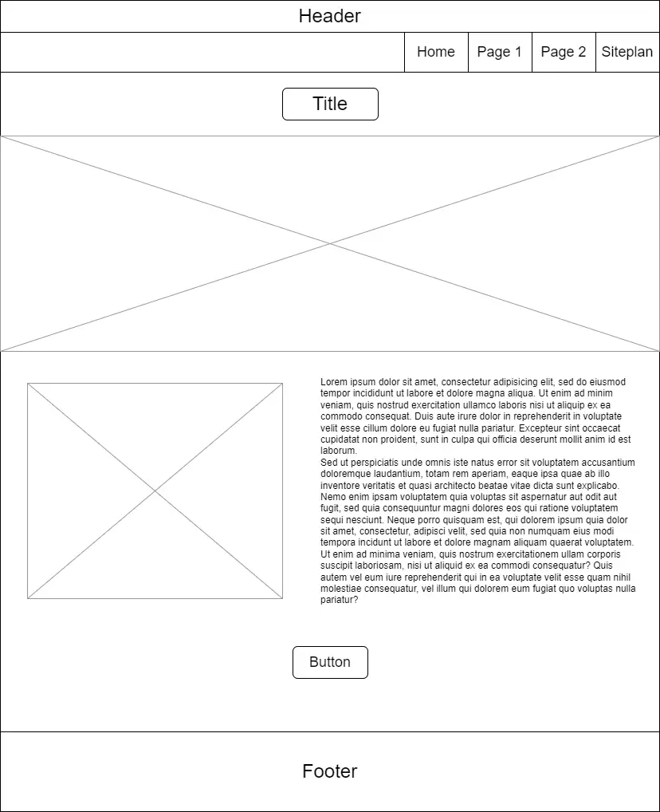
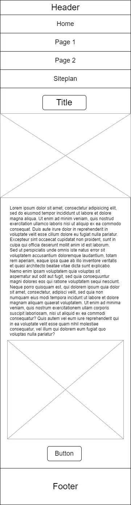

Site name: Astral Archives
The site name "Astral Archives" represents a website dedicated to providing information about humanity's efforts to explore space, documenting the milestones, discoveries, and future endeavors in our journey beyond Earth.
Site Purpose:
This site purpose is to provide information of the history of humanities' to explore the space and a list of space exploration agencies and details of them.
Scenarios:
What were the most significant space missions that shaped humanity's understanding of the universe?
Which space agencies around the world are leading current space exploration efforts?
Color Schema
| Primary | Secondary | Tertiary | Text |
|---|---|---|---|
| #1C1F4A | #F0A500 | #2C3E50 | #ffffff |
Typography
Heading Font: Merriweather
Paragraph Font: Open Sans
Wireframe (homepage)
Wireframe for large screens
Wireframe for small screens
